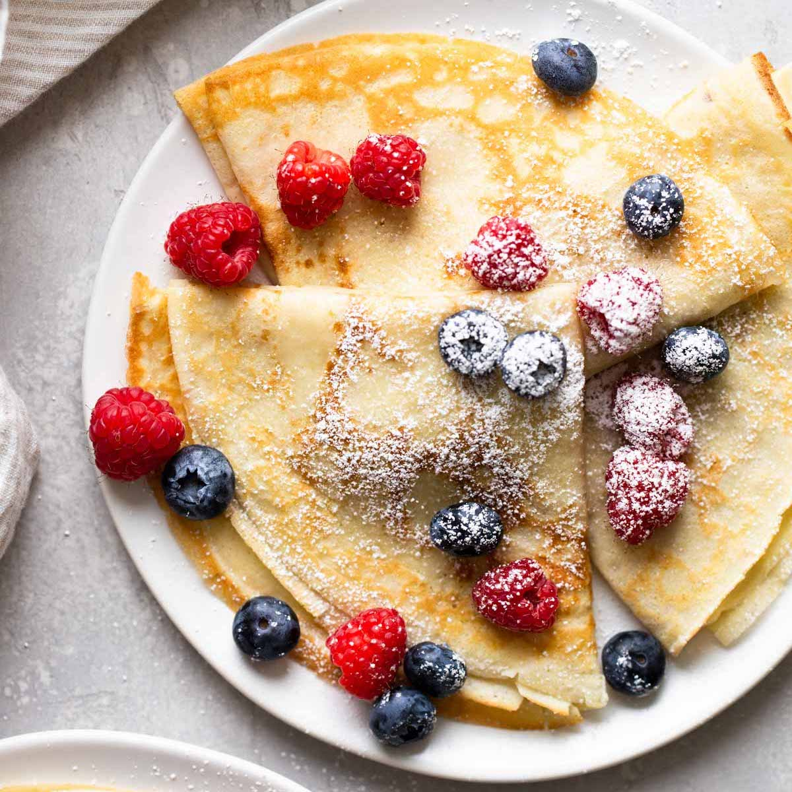

Sweet Crêpes

Crêpes are an ultra-thin pancake common in France that can be made sweet or savory,
typically rolled or folded with a variety of fillings from jam or Nutella to ham and
cheese to seafood.
Ingredients
- 1/2 teaspoon vegetable oil
- 5 1/2 ouces ATK All-Purpose Glute-Free Flour Blend (pg 7)
- 3 tablespoions plus 1/2 teaspoon sugar
- 1/4 teaspoon salt
- 1 1/2 cups whole milk
- 2 large eggs
- 2 tablespoons unsalted butter, melted and cooled
- Lemon wedges
Steps
-
Place oil in 10-inch nonstick skillet and heat
over low heat for at least 10 minutes. While
skillet is heating, whisk flour blend, 1 1/2
teaspoons sugar, and salt together in medium bowl.
I separate bowl, whisk together milk and eggs.
Add half of milk mixture to dry ingredients and
whisk until smooth. Add melted butter and whisk
until incorporated. Whisk in remaining milk
mixture until smooth.
-
Using paper towel, wipe out skillet, leaving thin
film of oil on bottom ad sides of pan. Increase heat
to medium and let skillet heat for 1 minute. After
1 minute, test heat of skillet by placig 1 teaspoon
batter in center and cook for 20 seconds. If mini
test crêpe is golden brown on bottom, skillet is
properly heated; if too light or too dark, adjust
heat accordingly and retest.
-
Whisk batter to recombine and pour scant 1/4 cup
batter into far side of pan and tilt and shake gently
util batter evenly covers bottom of pan. Cook crêpe
without moving it until top surface is dry ad crêpe
starts to brown at edges, loosening crêpe from side
of pan with silicone spatula, about 25 seconds.
Genntly slide spatula underneath edge of crêpe,
grasp edge with fingertips and flip crêpe. Cook
until second side is lightly spotted, about 20 seconds.
Trasfer cooked crêpe to wire rack, inverting so spotted
side is facig up. Return pan to heat and heat for
10 seconds before repeating with remainig batter,
whisking batter often to recombine. As crêpes are
done, stack on wire rack.
-
Sprinkle upper half of 1 crêpe with 1 teaspoon sugar.
Fold unsugared bottom half over sugared half, thef
old into quarters. Trasnfer sugared crêpe to servig
plate. Contiue with remaining crêpes and sugar. Serve
immediately, passing lemo wedges separately.